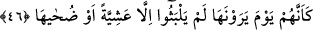

mümkündür. Bu takdirde ifâde; kasru’s-sıfat ale’l-mevsuf kabilinden olmuş olur.
Peygamberimiz (s.a.) “kıyametten korkanlara ve korkmayanlara gönderilmiş bir
peygamber olduğu halde burada neden sâdece “ondan korkanları uyarırsın” şeklinde bir
ifâde yer alıyor?” denilecek olursa buna şöyle cevap vermek mümkündür: Peygamber
Efendimiz ondan korkanlara uyarıcı olarak gösteriliyor. Çünkü bu uyarıdan
yararlananlar sâdece onlardır. Yani bu uyarı, sâdece bundan yararlanan kimselere etkili
olan bir uyarıdır. Nitekim bu hususta bir başka âyette şöyle buyruluyor: “Tehdidimden
korkanlara Kur’anla öğüt ver.” (Kaf 50/45)
Cumhura göre “munziru men yehşâhâ” ifâdesi, sıfatın ma’mulüne izâfeti kabilinden
olup tahfif yâni ifâdede hafiflik sağlamak içindir. Çünkü ism-i fâillerde aslolan temel
kural izâfettir. Bunların amelleri, ancak fiil-i muzariye benzedikleri için söz konusudur.
Bu âyeti tenvinli okuyan âlimler, ism-i fâillerde temel kuralın onları amel ettirmek
olduğunu, izâfetlerinin ise ancak ifâdede hafiflik sağlamak gayesiyle yapıldığını göz
önüne almış olmaktadırlar.
46. Kıyamet gününü gördüklerinde (dünyada) sâdece bir akşam vakti ya da onun
kuşluk zamanı kadar kaldıklarını sanırlar.
Âyette geçen “ed-duhâ”, güneşin doğumundan gün ortasına varıncaya kadar geçen
zamanın adıdır. Sonra ertesi günü sabaha kadar olan sürenin adı ise “aşiyy”dir. Nitekim
Keşfu’l-esrâr’da böyle ifâde edilmektedir. Bu cümle, ism-i mevsulden haldir. Çünkü
yukardaki ism-i mevsul izâfet takdirindedir. O ism-i mevsulü izâfet şeklinde takdir
etmezsek o zaman “munzirun” kelimesinin mef’ûlü olmuş olur. Buna göre âyete mânâ
vermek gerekirse şöyle deriz: Sen onları kıyamet gününü gördüklerinde -inanç
açısından- dünyadaki aldıkları uyarının ardından ancak kısa süre geçmiş zanneden
kişiler oldukları halde uyarırsın. Bu kısa süre ise bir tek günün kuşluk vakti veya akşam
üstü zamanıdır. Bir başka ifâdeyle onlar, kendilerine yapılan uyarı ile kıyamet arasında
bir tam gün değil, bir günün başı veya sonu kadar bir süre geçtiğini sanırlar.
“Aşiyyeten” kelimesinin sonundaki “tenvin” muzafun ileyhten ivazdır. O muzafun
ileyh, “gün” anlamına gelen “el-yevm” kelimesidir. Buna göre deyim “aşiyyete’l-
yevmi/bir günün akşam üstü zamanı” şeklinde olmuş olur. Burada “el-yevm” kelimesi
atılıp onun kuşluk vakti olan “duha”, aynı günün “aşiyye”sine izâfe edilmiştir. “Duha”
ve “aşiyye” aynı günün “ilk zamanı” ve “son vakti” oldukları için aralarında bir
mulabese/ilişki meydana gelmiştir. Bu mülabese, “duha” ile “aşiyye” kelimesinin
birbirine tamlama yapılması için yeterli bir gerekçedir. Bundan dolayı, “kuşluk”
anlamına gelen “duha” kelimesi “akşam üstü” anlamına gelen “aşiyye” kelimesine izâfe
edilmiş ve âyette olduğu gibi “duhâhâ” denmiştir.